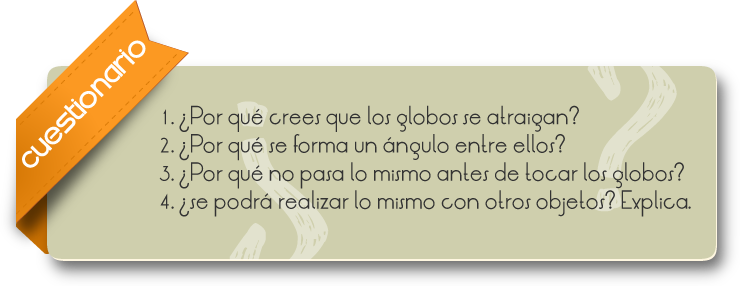

La electrostática es la rama de la física que estudia los fenómenos eléctricos producidos por distribuciones de cargas estáticas, esto es, el campo electrostático de un cuerpo cargado.
Históricamente la electrostática fue la rama del electromagnetismo que primero se desarrolló. Con la postulación de la Ley de Coulomb fue descrita y utilizada en experimentos de laboratorios a partir del siglo XVII, y ya en la segunda mitad del siglo XIX las leyes de Maxwell concluyeron definitivamente su estudio y explicación permitiendo demostrar cómo las leyes de la electrostática y las leyes que gobernaban los fenómenos magnéticos pueden ser estudiados en el mismo marco teórico denominado electromagnetismo.
La existencia del fenómeno electrostático es bien conocido desde la antigüedad, existen numerosos ejemplos ilustrativos que hoy forma parte de la enseñanza moderna; como el de comprobar como ciertos materiales se cargan de electricidad por simple frotadura y atraen, por ejemplo, pequeños trozos de papel o pelo a un globo que previamente se ha frotado con un paño.
Determinar cuantitativamente la fuerza eléctrica con que se repelen dos cuerpos cargados.
1) Midan la masa de los globos:
a. Masa: ___________
2) Inflen los globos lo mas que se pueda teniendo cuidado de no reventarlos.
3) Amárrenlos para que no se escape el aire y cuélguenlos de los hilos de 1.5 metros de largo desde el mismo punto del techo del laboratorio. Froten contra el cabello cada uno de los globos por toda su superficie, para que adquieran carga eléctrica en exceso del mismo signo.
4) Dejen "que descansen" libremente los hilos.

Comentarios
Si los globos se cargaron uniformemente en toda superficie se repelerán y los hilos formarán un ángulo de separación. Midan ese ángulo con un transportador:
Ángulo de separación:
Cada uno de los globos está resintiendo dos fuerzas: la eléctrica por repulsión del otro globo, la cual dirige horizontalmente: y la gravedad y la gravedad que se dirige verticalmente hacia abajo.
Peso: La fuerza eléctrica la puedes obtener de la siguiente manera: Si A es la distancia entre el centro de los globos, y B es la distancia del globo hasta el punto donde los hilos se sostienen, entonces:
A/2B=Feléctrica/peso
Despeja la fuerza eléctrica de la formula anterior y obtén el resultado.
Feléctrica=